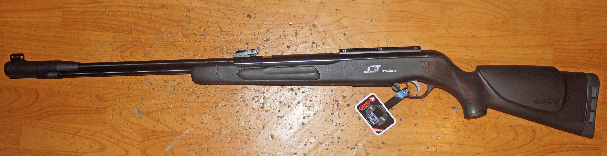
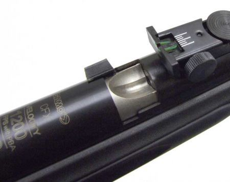
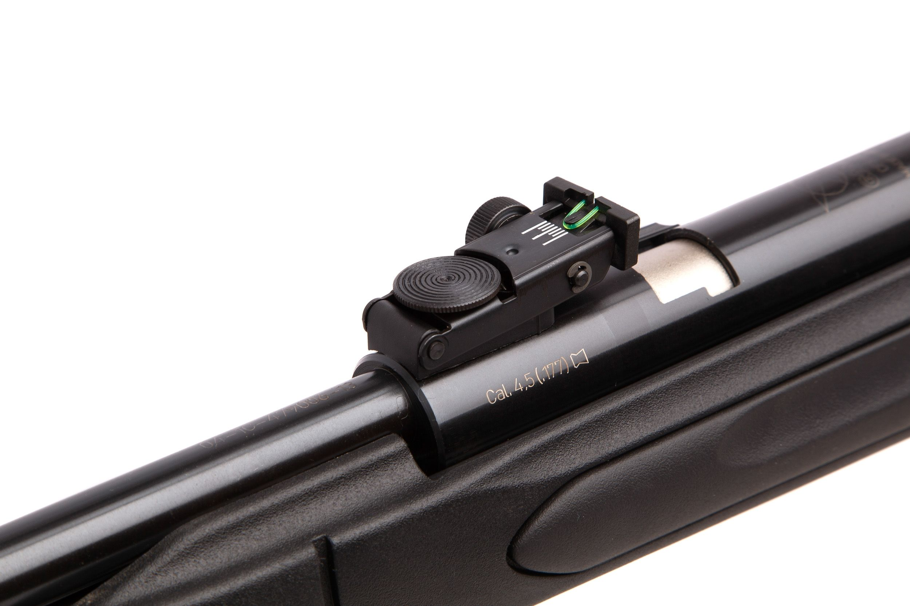
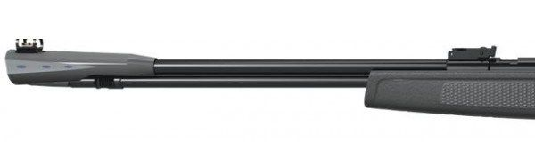

Винтовка пневматическая GAMO CFX IGT
Описание товара




Основные характеристики
| Характеристика | xxx |
|---|---|
| Бренд | GAMO |
| Страна-производитель | Испания |
| Материал | сталь, пластик |
| Цвет | Черный |
| Артикул | 611007-1IGT3J |
| Дульная энергия (не более), Дж | 3 |
| Начальная скорость, м/с | 110 |
| Канал ствола | нарезной |
| Длина с прикладом, мм | 1160 |
| Длина ствола, мм | 450 |
| Вес,г | 2900 |
Комплектации
| Название | Цена, руб | Цена со скидкой, руб |
|---|---|---|
| Базовая | 18790 | 17990 |
| Мастер | 22280 | 20629 |
| Профи | 28110 | 25619 |